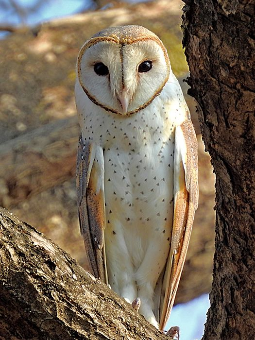
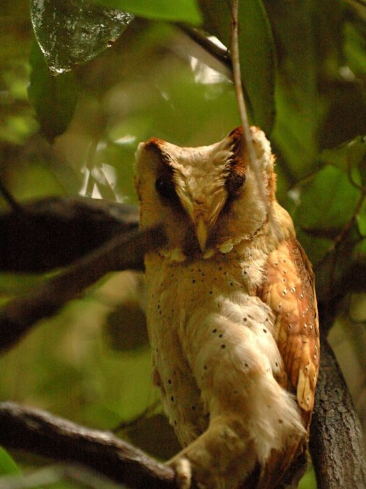

The Barn owl life cycle begins as with all birds in an egg.Their eggs take around thirty days to hatch though there is some variance between the subspecies Barn Owls differ from other owls due to their unique heart-shaped facial disks and their nearly pure black eyes

There are two genni with in the family, the tradtitonal barn owls (Genus Tyto, shown left) and the Bay owls (shown above) Bay owls live primarily around Asia, and all have a unique facial divet as seen above